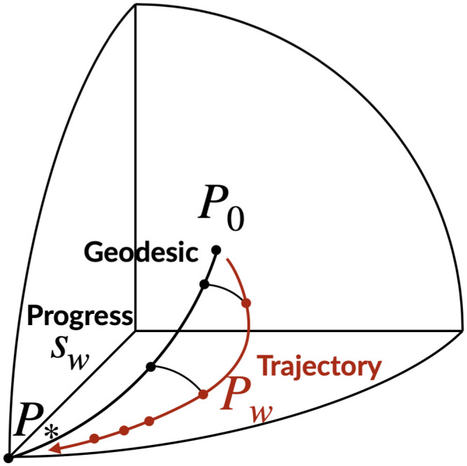

令 $x_n$ 为第 $n$ 张图像，$y_n$ 为其类别，$N$ 为图像数，$C$ 为类别数，$w$ 为网络权重，$p_w^n(c)=p_w(c\mid x_n)$ 为预测概率。正文式 (1) 把固定样本集上的联合标签分布写作 \[P_w(\vec y)=\prod_{n=1}^{N}p_w^n(y_n).\]
该乘积分解按样本给定模型预测的条件独立性构造；正文采用独立同分布样本叙述，附录草稿对固定样本与条件独立作更细区分。它提供跨架构共用的 $N(C-1)$ 维预测空间，不表示网络权重也共用坐标。
比较模型 $P_u,P_v$ 时，正文式 (2) 使用逐样本平均的 Bhattacharyya 距离： \[d_B(P_u,P_v)=-\frac1N\sum_{n=1}^{N}\log\!\left(\sum_{c=1}^{C}\sqrt{p_u^n(c)p_v^n(c)}\right).\]
平方根概率在单张图像上给出球面坐标；对数和样本平均避免高维乘积相似度迅速饱和。若真实标签是零一分布，$d_B(P_w,P_*)$ 等于分类交叉熵的一半（正文第 4 页）。
以均匀预测 $P_0$ 和真实标签分布 $P_*$ 为锚点，正文式 (4) 将检查点 $P_w$ 投影到两者之间的测地线： \[s_w=\operatorname*{argmin}_{\alpha\in[0,1]}d_G(P_w,P_{0,*}^{\alpha}).\]
$d_G$ 是逐样本球面角距离的平均，$s_w$ 是沿锚点测地线的“进度”，不是训练时间或准确率。用相同进度重新参数化轨迹后，正文式 (5) 积分比较整条轨迹；正文式 (6) 将距离矩阵 $D$ 居中为 $W=-LDL/2$，其中 $L_{uv}=\delta_{uv}-1/m$，再对 $W$ 做特征分解以获得 InPCA 坐标。负特征值对应带符号的 Minkowski 坐标，不能把散点图按普通欧氏距离解读。
CIFAR-10 测六种架构、优化器 SGD／Nesterov／Adam、批大小、权重衰减、图像增强及随机初值：2,296 个可分析配置约 70 次采样形成 151,407 个检查点模型。ImageNet 为 ResNet-18、ResNet-50、ViT-S 的 792 个检查点。作者报告约 60,000 GPU 小时；具体训练流程见 SI，主文第 3 页给出设计和算力。

Fig. 1 · 作者原图 Fig. 1：黑线是均匀预测与真实标签之间的测地线，红线为训练轨迹；投影点的位置定义进度。示意几何，不展示实验中的轨迹重合程度。© 2024 作者／PNAS，CC BY-NC-ND 4.0；原图未修改。
物理解读：相同进度使不同速度的训练轨迹可以比较，不能把进度当准确率。
来源：PNAS VoR physical PDF \(p\).2, Fig. 1; original unaltered PMC image; DOI 10.1073/pnas.2310002121; CC BY-NC-ND 4.0
Discussion
评论与讨论
评论公开保存在 GitHub Discussions；阅读无需登录，发表评论需要 GitHub 账号。